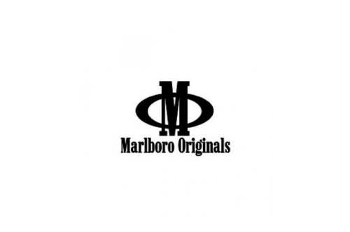

To download a copy of my CV, please click here.
Experience
NICRO
Assistant Accountant
January 2019 – December 2019
Accounts reconciliations & allocations to accounts.
Maintenance of client accounts.
Generating invoices and credit notes.
Age analysis and ledger entries.
Follow up on outstanding debtors accounts (Debt collection).
Send out client statements etc.
Posting of journals relating to Debtors.
Handling queries / enquiries with regards to debtors.
Filing and Ad hoc duties.
 A Fraser & Co/ Marlboro Originals
Assistant Accountant
March 2018 – June 2018
Processing of the bank accounts, bank reconciliations and petty cash.
Reconciling general and subsidiary bank accounts by gathering and balancing information.
Invoicing customers (Commission income).
Updating fixed asset register.
Posting of journals, depreciation
Preparing the analysis of accounts.
Carrick Financial Services
Accountant
September 2017 – February 2018
Processing of the bank accounts, bank reconciliations and petty cash.
Invoicing customers (Commission income).
Invoicing customers (other – Admin fee invoices, secretarial fees and chargebacks).
Lining up commission income and expenses.
Assist with management accounts.
Updating fixed asset register.
Posting of journals, depreciation, accruals and month end processes.
Preparing the analysis of accounts.
PBT Group
Accountant
October 2016 – August 2017
Maintain financial records for subsidiary companies by analysing balance sheets and general ledger accounts.
Reconciling general and subsidiary bank accounts by gathering and balancing information.
Provide financial status information by preparing special reports; completing special projects.
Correct errors by posting adjusting journal entries.
Maintain general ledger accounts by reconciling accounts receivable detail and control accounts
Calculation and submission of VAT returns.
Preparation of management reports.
Foreign exchange differences – valuation of foreign clients and bank accounts.
Secure financial information by completing database backups; keeping information confidential.
Maintain accounting controls by following policies and procedures; complying with regulatory financial requirements.
Ad hoc financial and administrative support to employees and finance team.
Please download my CV to get the rest of my work experience here.